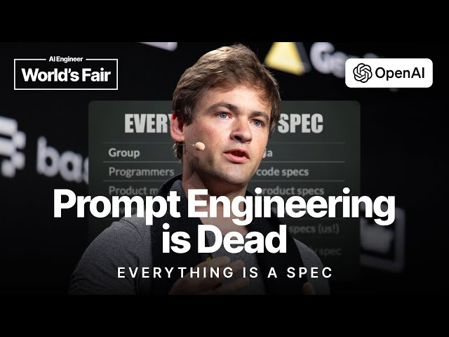

A folder the agent can load on demand. Inside: metadata that says when to use it, instructions that say how, scripts that do the work, and any assets the work needs. ⌁The agent reads the metadata at startup; the rest only enters context when the skill is judged relevant.
Anthropic Engineering — Equipping Agents for the Real World with Agent Skills, Dec 2025.
See also Zhang & Murag — Don't Build Agents, Build Skills Instead, AI Engineer Code Summit, late 2025.
Barry Zhang & Mahesh Murag — Anthropic

Sean Grove — then OpenAI alignment
--- name: residual-structure description: After a fit, characterise what's LEFT in the residual — temporal autocorrelation at multiple lags, Pearson correlation with each input feature AND its first time-derivative, sign-asymmetry in δ. Returns a per-platform verdict — either "noise_floor" (stop; you're done) or "structure_detected" with a specific reason ("residual autocorrelated at lag 6 → try a τ·d(δ)/dt term"). Use as the bridge between fit-model and "is V2 worth building?". This is the diagnostic the v2 cohort silently lacked — almost everyone shipped V1 understeer; the one agent who didn't (m2-agent-05, +51.5% yaw) saw exactly this autocorrelation signature and added a steering-rate lead. when-to-invoke: After running `fit-model` and `score-model`, when you are trying to decide whether your current model has more headroom or you are at the noise floor. Especially when yaw RMSE has stalled and you do not know whether to ship or keep iterating. when-NOT-to-invoke: Before any fit (run scoring-model first — you need a fitted predict_fn). To see route-level bias (use route-bias). To plot residual vs one feature (use inspect-residuals). load-cost: ~210 tokens metadata, ~500 tokens body. ---
Names the verdict the skill produces — and the failure mode it prevents — not the function it calls. Where your organisation's expertise lives.
Three explicit redirects. Without them the agent guesses which skill to load; with them, it routes.
Metadata is paid every turn; body only when this skill activates. Without the receipt, you can't budget the eleventh skill.